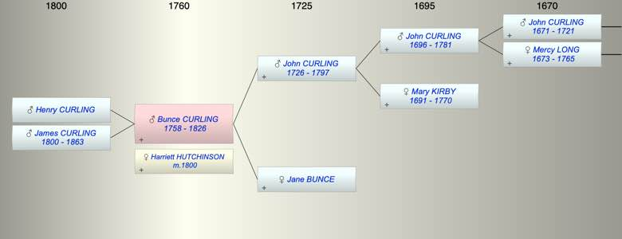

| [Index] |
| Bunce CURLING (1758 - 1826) |
|  |
| b. 1758 |
| m. 11 Jan 1800 Harriett HUTCHINSON at St Helen, Bishopgate, London |
| d. 1826 aged 68 |
| Parents: |
| John CURLING (1726 - 1797) |
| Jane BUNCE |
| Children (2): |
| Henry CURLING |
| James Bunce CURLING (1800 - 1863) |
| Events in Bunce CURLING (1758 - 1826)'s life | |||||
| Date | Age | Event | Place | Notes | Src |
| Birth of son Henry CURLING | ex FS no details | ||||
| 1758 | Bunce CURLING was born | ||||
| 11 Oct 1797 | 39 | Death of father John CURLING (aged 71) | Ash | Note 1 | |
| 11 Jan 1800 | 42 | Married Harriett HUTCHINSON | St Helen, Bishopgate, London | ex FS | |
| 29 Sep 1800 | 42 | Birth of son James Bunce CURLING | London | Note 2 | |
| 1826 | 68 | Bunce CURLING died | buried 7 JUl 1826 Ham ex FS | ||
| Note 1: John was living with his son Thomas at Ash next Sandwich at the time of his death but he was buried in the family vault in Ham. |
| Note 2: bap 12 Dec 1800 Old Church St Pancras ex FS |
| Created on a Mac™ using iFamily for Mac™ on 8 Oct 2023 |